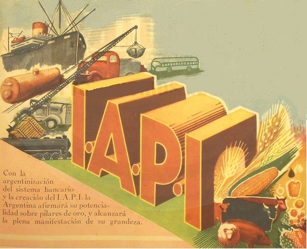
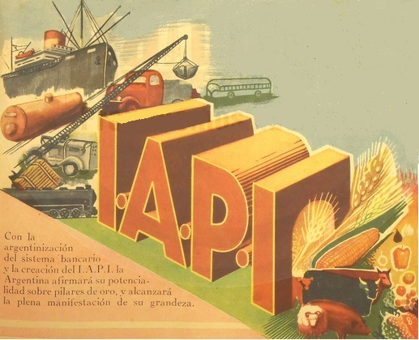

Politica economica del Peronismo
 

Primer plan quinquenal
El primer plan, era populista quasi socialista, expropio empresas, como los transportes de buenos aires, de los ingleses
algunas de estas empresas, apenas si operaban con ganancias, asi que cuando el gobierno de Peron propuso comprarlas, estos accesieron
felizmente, a pesar de lo que algunos historiadores dicen
Segundo plan quinquenal
El segundo fue un cambio casi de 180 grados con respecto al primero, las expropiaciones terminaron y comenzo una politica economica ortodoxa
para combatir la inflacion, el gobierno restringio la obra publica, los creditos hipotecarios y la emision monetaria
Estas acciones tuvieron efectos positivos, lograron bajar la inflacion del 30% a menos del 5%.
Que causo el cambio de politica monetaria?
Parte de los efectos de la compra de empresas, es que fueron usadas con motivos electorales, inflaron la nomina en algunos casos al 300%
causando que las empresas comenzaran a operar con numeros rojos, que tenian que ser cubiertos con plata del gobierno
Al mismo tiempo, el precio internacional de los granos bajo, para compenzar esto, el gobierno subsidiaba el precio a los productores
todo esto causo un drenaje de divisas, el gobierno simplemente no tenia plata para cubrir tantos gastos, asi que recurrio a la emision monetaria
esto disparo la inflacion.
Inflacion durante el Peronismo
La inflacion llego a un punto critico en 1949, con una inflacion del 30%